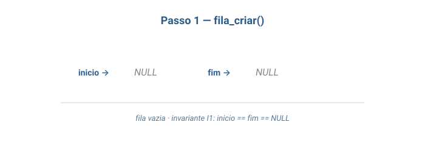
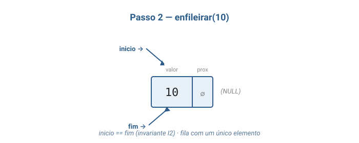
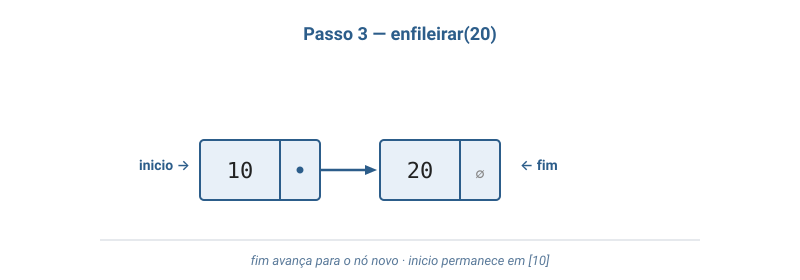
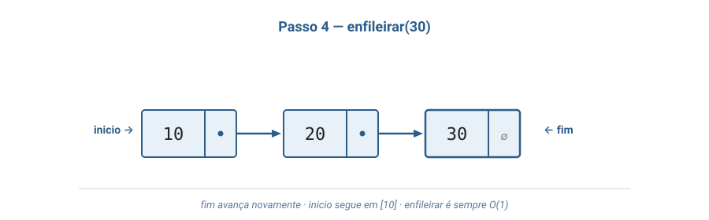
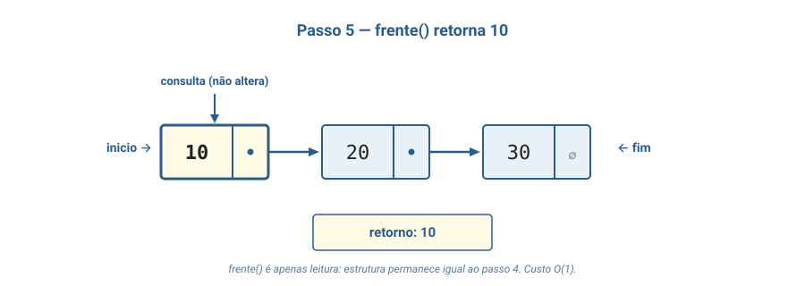
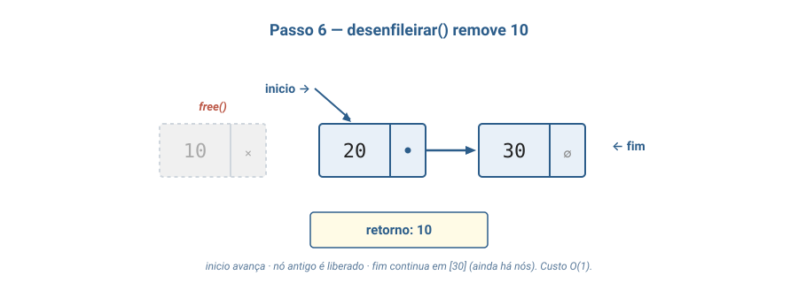
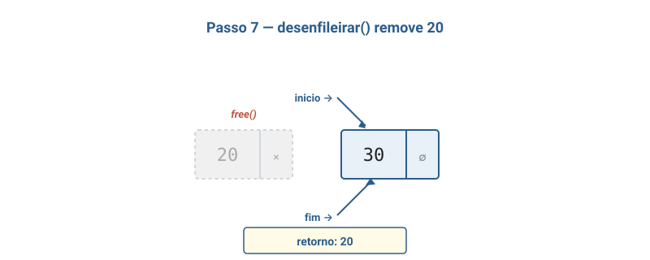

Aula 03
FIFO · primeira implementação concreta em C
Aula de implementação — código, header e main executável.
Bloco 1
TAD que representa uma sequência com inserção em uma extremidade e remoção na oposta, governada pela política FIFO (First-In, First-Out).
Aparece em qualquer cenário que precisa preservar a ordem temporal de chegada:
Tratamento canônico: Tenenbaum, cap. 4 — "Filas e listas"; Sedgewick, Parte 1, cap. 4 — seção sobre FIFO queues.
criar() -> Fila
enfileirar(Fila, Inteiro) -> Fila
desenfileirar(Fila) -> Fila [erro se vazia]
frente(Fila) -> Inteiro [erro se vazia]
vazia(Fila) -> Booleanovazia(criar()) = verdadeirovazia(enfileirar(F, x)) = falsofrente(enfileirar(criar(), x)) = xfrente(enfileirar(F, x)) = frente(F)
quando F não-vazia
desenfileirar(enfileirar(F, x)) = enfileirar(desenfileirar(F), x)
quando F não-vazia
| Representação | Vantagem | Custo |
|---|---|---|
| Vetor com deslocamento | Simples | Remover na frente: O(n) |
| Vetor circular | Tudo em O(1) | Capacidade fixa |
| Lista encadeada com inicio + fim | Tudo em O(1); dinâmica | Ponteiro extra (8 B) + 1 malloc por nó |
Escolhida nesta aula: lista simplesmente encadeada com inicio e fim.
As três opções são cobertas em CLRS, cap. 10.1, e Tenenbaum, cap. 4.
enfileirar(x): cria nó, liga fim a ele, atualiza fim.desenfileirar(): lê inicio, avança, libera o nó antigo.frente(): lê o valor de inicio sem mexer.vazia(): inicio == NULL.Toda operação em O(1) — esse é o ganho que motivou a escolha pela lista.
inicio e fim) são NULL ao mesmo tempo.
inicio e
fim apontam para o mesmo nó.
fim->proximo
é NULL e seguindo inicio pelos campos
proximo chega-se ao nó apontado por fim.
Cada operação deve terminar deixando essas propriedades válidas. Atenção ao caso de desenfileirar o último elemento — é preciso zerar os dois ponteiros.
Bloco 2
enfileirardesenfileirarfrentevaziaA regra inviolável: ninguém fura a fila. Quem chegou primeiro é atendido primeiro. FIFO.
A Fila não te deixa olhar o terceiro da fila, nem o último.
Você só mexe nas duas pontas.
Essa restrição é o que torna a Fila simples e rápida — e o que faz dela uma estrutura diferente de uma lista genérica.
Bloco 3
Ciclo completo: criar → 3× enfileirar → frente → 2× desenfileirar.







Ao desenfileirar o último, fim também precisa ir para NULL.
Bloco 4
Dezenas de alunos, uma única impressora. Todas as requisições chegam quase ao mesmo tempo.
Solução: toda requisição entra em uma Fila. Quem chegou primeiro imprime primeiro.
Estrutura natural sempre que a ordem de chegada importa e ninguém pode ser pulado.
Bloco 5
Você chega → vai para o fim. Quem está sendo atendido está na frente.
Ninguém é atendido fora de ordem. As únicas pontas que importam são
inicio e fim — o meio é invisível para a operação.
Você manda 5 mensagens em sequência sem sinal. Elas ficam enfileiradas no aparelho na ordem em que foram digitadas.
Quando o sinal volta, o app envia uma a uma na ordem original — não a última primeiro, não em ordem aleatória.
FIFO puro.
Bloco 6
Lista simplesmente encadeada com inicio e fim.
fila.c
Tudo num lugar só: #includes, structs, funções e main().
Em uma aula futura sobre organização de projetos em C, veremos como dividir uma TAD emfila.h+fila.c(separação interface / implementação). Por enquanto, manter tudo num arquivo facilita ler de cima a baixo.
fila.c — includes e structs#include <stdio.h>
#include <stdlib.h>
// Cada elemento da fila vira um No.
typedef struct No {
int valor;
struct No* proximo;
} No;
// A fila guarda a frente e o fim.
typedef struct Fila {
No* inicio;
No* fim;
} Fila;
Fila* fila_criar(void) {
Fila* f = malloc(sizeof(Fila));
if (f == NULL) {
printf("erro: memoria insuficiente\n");
exit(1);
}
f->inicio = NULL;
f->fim = NULL;
return f;
}fila_enfileirarvoid fila_enfileirar(Fila* f, int valor) {
No* novo = malloc(sizeof(No));
if (novo == NULL) {
printf("erro: memoria insuficiente\n");
exit(1);
}
novo->valor = valor;
novo->proximo = NULL;
if (fila_vazia(f)) {
// Fila estava vazia: o novo no e' tambem a frente.
f->inicio = novo;
} else {
// Liga o no que era o fim ao novo no.
f->fim->proximo = novo;
}
f->fim = novo;
}fila_desenfileirarint fila_desenfileirar(Fila* f) {
if (fila_vazia(f)) {
printf("erro: fila vazia\n");
exit(1);
}
No* removido = f->inicio;
int valor = removido->valor;
f->inicio = removido->proximo;
if (f->inicio == NULL) {
// Tiramos o ultimo elemento: a fila ficou vazia.
// O fim tambem precisa virar NULL — caso contrario continuaria
// apontando para o no que vamos liberar com free().
f->fim = NULL;
}
free(removido);
return valor;
}frente, vazia, destruirint fila_frente(Fila* f) {
if (fila_vazia(f)) {
printf("erro: fila vazia\n");
exit(1);
}
return f->inicio->valor;
}
int fila_vazia(Fila* f) {
return f->inicio == NULL;
}
void fila_destruir(Fila* f) {
No* atual = f->inicio;
while (atual != NULL) {
No* prox = atual->proximo;
free(atual);
atual = prox;
}
free(f);
}main() — programa demonstrativoint main(void) {
Fila* f = fila_criar();
fila_enfileirar(f, 10);
fila_enfileirar(f, 20);
fila_enfileirar(f, 30);
printf("Frente da fila: %d\n", fila_frente(f));
printf("Desenfileirando: ");
while (!fila_vazia(f)) {
printf("%d ", fila_desenfileirar(f));
}
printf("\n");
fila_destruir(f);
return 0;
}
A main() fica no mesmo fila.c, ao final do arquivo.
gcc -Wall -Wextra -o fila_demo fila.c
./fila_demoSaída:
Frente da fila: 10
Desenfileirando: 10 20 30
Um único arquivo, uma única invocação do gcc.
A linha 10 20 30 é a prova empírica do FIFO.
Bloco 7
Fila inicial vazia. Sequência:
enf(7), enf(3), enf(11),
desenf, enf(5), frente,
desenf, desenf.
Para cada operação, escreva o estado da fila e o valor retornado.
enf(7) → [7]enf(3) → [7, 3]enf(11) → [7, 3, 11]desenf → [3, 11] · retorna 7enf(5) → [3, 11, 5]frente → [3, 11, 5] · retorna 3desenf → [11, 5] · retorna 3desenf → [5] · retorna 11fila_imprimir
Adicione void fila_imprimir(const Fila* f) que imprime
[10, 20, 30] da frente para o fim, ou [] se vazia.
Restrição: não usar desenfileirar (a função imprime sem alterar a fila).
void fila_imprimir(const Fila* f) {
printf("[");
for (No* a = f->inicio; a != NULL; a = a->proximo) {
printf("%d", a->valor);
if (a->proximo != NULL) printf(", ");
}
printf("]\n");
}
Programa que lê inteiros até o usuário digitar 0:
"fila vazia").0 → encerra e imprime estado final.int main(void) {
Fila* f = fila_criar();
int x;
while (scanf("%d", &x) == 1 && x != 0) {
if (x > 0) fila_enfileirar(f, x);
else if (fila_vazia(f)) printf("fila vazia\n");
else printf("%d\n", fila_desenfileirar(f));
}
fila_imprimir(f);
fila_destruir(f);
return 0;
}
Use uma Pilha auxiliar para inverter uma Fila F.
Ao final, F está invertida e a Pilha vazia.
1. Enquanto F nao vazia:
x = desenfileirar(F)
empilhar(P, x)
2. Enquanto P nao vazia:
y = desempilhar(P)
enfileirar(F, y)Fase 1: F → P preserva ordem mas guarda em LIFO. Fase 2: P → F sai em ordem inversa. O(n).
Reimplemente o mesmo TAD em um novo arquivo fila_vetor.c
usando vetor com aritmética circular
(frente/tras, % capacidade).
Mantenha as mesmas assinaturas de função e a mesma main()
do fila.c. Compila e roda sem alterar a main.
Mostra o poder do TAD: trocou a representação interna, o resultado observável não muda. O contrato é o que importa para o cliente.
typedef struct Fila {
int* dados;
int capacidade;
int frente;
int tras;
int tamanho;
} Fila;
bool fila_enfileirar(Fila* f, int v) {
if (f->tamanho == f->capacidade) return false;
f->dados[f->tras] = v;
f->tras = (f->tras + 1) % f->capacidade;
f->tamanho++;
return true;
}
Implementação completa em aula03_fila.md.
Leituras complementares:
A outra face da moeda: LIFO sobre lista encadeada.